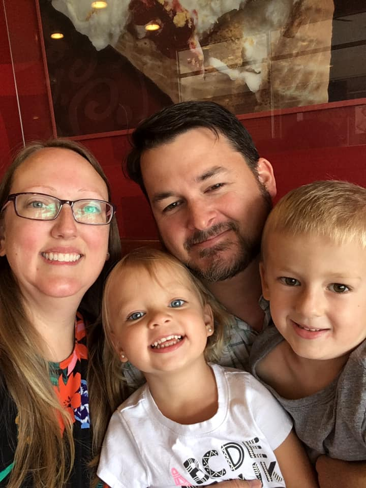

 Hello, my name is Matthew Funk. I'm a 40 year old father of 2 and married to one of the most patient women ever to grace this earth. I am currently a security operations engineer but am looking to move into more of a developer or devops role. I initially intended to move into an investigative role, be it in a SOC or threat intelligence, but recently reconsidered that after being exposed to programming in Python. The ability to automate tasks and streamline processes really intrigued me and scratched the problem-solver itch that is always active in my brain. In an effort to be platform agnostic I started to work with Flask and pushed my tools to a web interface. This really had an effect on me and caused me to rethink my career path. I am hoping to leverage this bootcamp into fleshing out my skillset even more and allowing me to bring into reality the apps I have been brainstorming about but never knew how to make.
My hobbies are my kids and video games. My son plays soccer and is starting to get into other sports while my daughter will be starting dance soon. I enjoy watching them work hard and accomplish their goals. When I am not with them or spending time with my lovely wife, I am playing video games. I have been an avid gamer most of my life, starting with Super Mario Brothers and Duck Hunt at the age of 5. I've recently taken up the hobby of streaming video games and am working towards the affiliate status with Twitch. I play a variety of games and am constantly practicing and streaming to hone the craft and make it an enjoyable experience for the viewer. I really enjoy it because it allows me to do a few things I love at once; including playing video games and making people laugh.